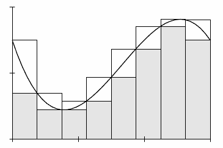
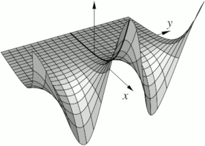
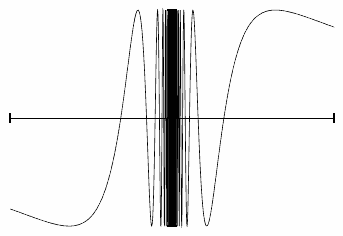

This free online textbook (OER more formally) is a course in undergraduate real analysis (somewhere it is called "advanced calculus"). The book is meant both for a basic course for students who do not necessarily wish to go to graduate school, but also as a more advanced course that also covers topics such as metric spaces and should prepare students for graduate study.

A prerequisite for the course is a basic proof course. An advanced course could be two semesters long with some of the second-semester topics such as multivariable differential calculus, path integrals, and the multivariable integral using the second volume. There are more topics than can be covered in two semesters, and it can also be reading for beginning graduate students to refresh their analysis or fill in some of the holes.This book started its life as my lecture notes for Math 444 at the University of Illinois at Urbana-Champaign (UIUC) in the fall semester of 2009. It was later enhanced to teach the Math 521/522 sequence at University of Wisconsin-Madison (UW-Madison) and the Math 4143/4153 sequence at Oklahoma State University (OSU).
The book (volume I) starts with analysis on the real line, going through sequences, series, and then into continuity, the derivative, and the Riemann integral using the Darboux approach. There are plenty of available detours along the way, or we can power through towards the metric spaces in chapter 7. The philosophy is that metric spaces are absorbed much better by the students after they have gotten comfortable with basic analysis techniques in the very concrete setting of the real line. As a bonus, the book can be used both by a slower-paced, less abstract course, and a faster-paced more abstract course for future graduate students. The slower course never reaches metric spaces. A nice capstone theorem for such a course is the Picard theorem on existence and uniqueness of ordinary differential equations, a proof which brings together everything one has learned in the course. A faster-paced course would generally reach metric spaces, and as a reward such students can see a streamlined (but more abstract) proof of Picard.
Volume II continues into multivariable analysis. Starting with differential calculus, including inverse and implicit function theorems, continuing with differentiation under the integral and path integrals, which are often not covered in a course like this, and multivariable Riemann integral. Finally, there is also a chapter on power series, Arzelà-Ascoli, Stone-Weierstrass, and Fourier series. Together the two volumes provide enough material for several different types of year-long sequences. A student who absorbs the first volume and the first three chapters of volume II should be more than prepared for graduate real and complex analysis courses.

I have tried (especially in recent editions) to add many diagrams and graphs to visually illustrate the proofs and make them more accessible. Usually, these are precise and more in-depth versions of the drawings I attempt on the board in class. Together, the two volumes have over a hundred figures.The aim is to provide a low cost, redistributable, not overly long, high-quality textbook that students will actually keep rather than selling back after the semester is over. Even if the students throw it out, they can always look it up on the net again. You are free to have a local bookstore or copy store make and sell copies for your students. See below about the license.
One reason for making the book freely available is to allow modification and customization for a specific purpose if necessary (as the University of Pittsburgh has done for example). If you do modify this book, make sure to mark them prominently as such to avoid confusion. This aspect is also important for the longevity of the book. The book can be updated and modified even if I happen to drop off the face of the earth. You do not have to depend on any publisher being interested as with traditional textbooks.
Furthermore, errata are fixed promptly, meaning that if you teach the same class next term, all errata that are spotted are most likely already fixed. No need to wait several years for a new edition. Every once in a while I make some major addition and a new major version (edition), and then in between as errata are fixed I make minor version updates (like a corrected printing) usually once or twice a year, depending on the errata discovered. Exercise, chapter, and section numbers are preserved as much as humanly possible. What's added is added at the end with new numbers, so the book is generally compatible even if students (or the instructor) have an older printed copy. The minor updates are totally interchangeable and have very minimal changes, essentially nothing new.
MAA published a
review of the book (they looked at the December 2012 edition of Volume I, there was only the first volume then).

Introduction
Volume II:
There are 538 exercises and 77 figures in Volume I.
There are 275 exercises and 55 figures in Volume II.
Please let me know at
if you
find any typos or have corrections, extra exercises or material, or any other
comments.
There is no solutions manual for the exercises.
This situation is intentional. There is an unfortunately large number
of problems with solutions out there already. Part of learning how to do
proofs is to learn how to recognize your proof is correct.
Looking at someone else's
proof is a far less effective way of checking your proof than actually
checking your proof.
It is like going the gym and watching other people work out. The exercises in
the book are meant to be a gym for the mind.
If you are unsure about the correctness of a solution,
then you do not yet have a solution. Furthermore, the best solution
for the student is the one that the student comes up with on their own, not
necessarily the one that the professor or the book author comes up with.
if you use the book for teaching a course,
do let me know
().
The book was
used, or is being used, as the primary textbook
at (other than my courses at UIUC, UCSD, UW-Madison, and OSU)
University of California at Berkeley,
University of Pittsburgh, Vancouver Island University,
Western Illinois University, Medgar Evers College, San Diego State University,
University of Toledo, Oregon Institute of Technology, Iowa State University,
California State University Dominguez Hills,
St. John's University of Tanzania,
Mary Baldwin College,
Ateneo De Manila University,
University of New Brunswick Saint John,
and many many others. See below for a more complete list.
The book has been selected as an Approved Textbook
in the American Institute of Mathematics Open
Textbook Initiative.
See a list of classroom adoptions for more details.
Download the volume I of the book as PDF
Download the volume II of the book as PDF
Lots of minor new additions were added in version 5.0 throughout and there were some changes, and a whole new chapter was added to volume II.
Check for any
errata (volume I)
(volume II)
in the current
version.
Look at the
change log (volume I)
(volume II)
to see what changed in
the newest version.
I started numbering things with version numbers starting at 4.0 for volume I,
and version 1.0 for volume II.
The first
number is the major number and it really means "edition" and will be raised
when substantial changes are made. The second number is raised for corrections
only.
For version (edition) 6, I started using version 6 for volume II as well for consistency, so volume II went from 2.6 to 6.0, and both volumes now have same version number.
I get a bit of money when you buy these (depending on where exactly they are
bought). Used to be enough to buy me a coffee, but inflation is taking its toll,
so by buying a copy you will support this project. You will also
save your toner cartridge.
Lulu always has the most up to date version than amazon,
the difference is usually in terms of days or weeks. The paperback copy is on
Crown Quatro size (7.44x9.68 inch), and the two versions of it (amazon and lulu)
are essentially identical except for cover art (there are those who like the blue).
I tested both and they both print quite well, so the quality is approximately the
same, and I have seen some of them take quite a bit of beating by students.
Lulu also allows me to make a larger (US letter size) coil bound version which I prefer to get when
teaching, as it can easily be opened and kept on a certain page.
It may be easier to read, and take notes in as it has larger font and
wider margins, though a little less portable. It's only a few dollars more.
Buy a
paperback copy on Amazon for $18.50.
Buy the smaller
paperback copy at lulu.com for $18.50.
Buy a
paperback copy on Amazon for $14.50.
Buy the smaller
paperback copy at lulu.com for $14.50.
Browse the book in a web (HTML) version of both volumes put together.
The PDF version is the authoritative copy, and will print far better.
Search the web version (Google puts in a bunch of ads at the top of every
search, unfortunately, can't get rid of that):
I put together a set of problems for most of the first volume of the book.
These are companion problems to actual written homework, there
are a lot of True/False problems, ordering statements into a proof, etc.
They are not meant to replace written homework, they give students
a bit more immediate feedback and some extra practice.
Coverage is more or less reasonable for the non-optional bits, trying to
get at least 2-3 questions per section (more for ones that take longer).
There are altogether 107 problems for volume I with a little bit of overlap
with some of the written homework from the book. A couple of sections in
volume I only have 1
problem (3.6, 4.4, 5.4, 5.5).
A few volume II problems are also included, mostly for chapters 8 and 10,
but even there the coverage is lower, and quite a few sections have no problems.
The problems are mostly class tested.
(For the first semester I used 6 problems per week and covered
the non-optional bits of chapters 0-5, and 7.)
To use, make sure you have a recent WeBWorK installation, and drop the
rahw.tgz file into your templates directory.
Everything should just work if you have 3.16 or newer. If you have an older
WeBWorK installation you have to manually install the
draggableProof.pl macro (I tested on 3.14).
Do let me know if you have any suggestions, comments, or fixes, etc.
The problems above were for the most part created with a script that I've put
online that you can easily use to quickly create WeBWorK problems for this
kind of class. A little bit of experience with WeBWorK is needed, but it
will handle most of the grubby details.
See: https://www.jirka.org/wwin/
A sample file is at the bottom of that page that acts as documentation.
I have created some slides for my class, not every section is there. It is only (most of) volume I.
See the PDFs of the slides. If you want to use them, you probably might want
to modify them, the LaTeX sources are in the github (see below) in the slides directory.
They need to be built there as they refer to the figures (or you may need to modify the paths
appropriately).
A team from Peking University formalized the first volume using Lean:
University of Pittsburgh has made their own version:
The source for thee book is hosted on GitHub:
https://github.com/jirilebl/ra
(both volumes).
You can get an archive of the source of the released version on github,
look under
https://github.com/jirilebl/ra/releases,
though if you plan to work with it, maybe best to look at just the latest
working version as that might have errata fixes or new additions.
On the other hand, this might be a work in progress.
Just ask me if unsure.
Volume I is realanal.tex and volume II
is realanal2.tex (those are the "driver files" text is
in separate files for each chapter).
I compile the pdf with pdflatex.
You need to compile the first volume first before the second volume.
You might need to run
makeindex (for the index)
and
makeglossary (for the list of notations)
as well, though theoretically it should now be handled automatically.
There are scripts
publish.sh and
publish2.sh,
that run everything an obnoxious number of times to make sure it all works.
During the writing of this book,
the author was in part supported by NSF grant DMS-0900885 and DMS-1362337.
This work is
dual licensed under a
Creative Commons
Attribution-Noncommercial-Share Alike 4.0 License and
Creative Commons
Attribution-Share Alike 4.0 License.
You can use, print, copy, and share this book as much as you want. You can
base your own book/notes on these and reuse parts if you keep the license the
same (that is, as long as you use at least one of the two licenses).
Table of contents:
1. Real Numbers
2. Sequences and Series
3. Continuous Functions
4. The Derivative
5. The Riemann Integral
6. Sequences of Functions
7. Metric Spaces
8. Several Variables and Partial Derivatives
9. One Dimensional Integrals in Several Variables
10. Multivariable Integral
11. Functions as Limits
Adoption:
Download:
(Version 6.2, May 23rd, 2025, 312 pages, 2.0 MB download)
(Version 6.2, May 23rd, 2025, 217 pages, 1.6 MB download)
Buy paperback:
Volume I:
This copy is
the version 6.1 (October 24th, 2024) revision of volume I.
ISBN-13: 979-8851944635
Or buy the larger
coil-bound copy at lulu.com for $21.50.
This copy is
the version 6.2 (May, 23rd, 2025) revision of volume I.
No ISBN for the lulu version.
Volume II:
This copy is
the version 6.1 (October 24th, 2024) revision of volume II.
ISBN-13: 979-8851945977
Or buy the larger
coil-bound copy at lulu.com for $17.50.
This copy is
the version 6.2 (May, 23rd, 2025) revision of volume II.
No ISBN for the lulu version.
Web version:
Search:
Online courses using the book:
The book is used in the MIT OpenCourseWare Math
18.100A, Fall 2020, Prof. Casey Rodriguez, you can see the lectures
on YouTube.
Instructor resources:
Online homework (WeBWorK):
Online homework creation script (WeBWorK):
Slides:
Derivative versions, projects using this text
https://github.com/optpku/ReasBook.
http://calculus.math.pitt.edu/books/pittanal.pdf.
Source:
License:
Useful links:
- Notes on Diffy Qs: Differential Equations for Engineers
Another free undergraduate textbook. This one is a bit more basic, it is an application-oriented introduction to differential equations (no proofs there). - Guide to Cultivating Complex Analysis: Working the Complex Field
A graduate complex analysis course for incoming graduate students. After completing this real analysis course, the student should be ready for this complex analysis course. Again, a free textbook. - Wikipedia: Mathematical Analysis
- Introduction to Real Analysis by William Trench
- List of approved free textbooks from the American Institute of Mathematics
- Online Mathematics Textbooks
- Math Books
- OnlineCourses.com, a directory of online courses
Further reading:
- Robert G. Bartle, Donald R. Sherbert, Introduction to real analysis, 3rd ed., John Wiley & Sons Inc., 2000.
- John P. D'Angelo, Douglas B. West, Mathematical Thinking: Problem-Solving and Proofs, 2nd ed., Prentice Hall, 1999.
- Joseph E. Fields, A Gentle Introduction to the Art of Mathematics, http://giam.southernct.edu/GIAM/.
- Richard Hammack, Book of Proof, https://richardhammack.github.io/BookOfProof/.
- Maxwell Rosenlicht, Introduction to analysis, Reprint of the 1968 edition, Dover Publications Inc., 1986. ISBN:0-486-65038-3
- Walter Rudin, Principles of mathematical analysis, 3rd ed., McGraw-Hill Book Co., 1976.
- William F. Trench, Introduction to real analysis, Pearson Education, 2003, http://ramanujan.math.trinity.edu/wtrench/texts/TRENCH_REAL_ANALYSIS.PDF.